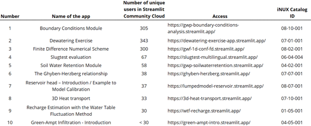
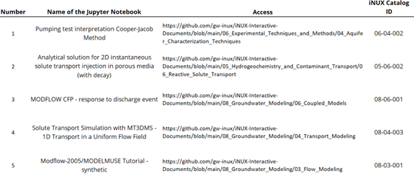

Example-Applied Hydrogeology
15 December 2025; v1.0
Thomas Reimann¹, Rudolf Liedl¹, Markus Giese², Roland Barthel²,
Edith Grießer³, Steffen Birk³, Oriol Bertran⁴, Daniel Fernàndez-Garcia⁴
¹ TU Dresden, Institute for Groundwater Management
² University of Gothenburg, Department of Earth Sciences
³ University of Graz, Department of Earth Sciences, NAWI Graz Geocenter
⁴ Polytechnical University of Catalonia, Department of Civil and Environmental Engineering, Spain
Disclaimer
This document represents a static snapshot of the iNUX Interactive Documents Overview and Examples for Applied Hydrogeology at the time of publication.The most recent online version is available at the gw-inux GitHub repository:
https://github.com/gw-inux/iNUX-Handbook/tree/main/Examples_Applied_Hydrogeology
Content
- Purpose and Scope
- Availability of Interactive Documents and Usage Statistics
- Selected Examples of Frequently Used Interactive Documents
- Acknowledgment
- References
1 Purpose and Scope
This report provides a concise overview of active interactive documents hosted in the iNUX GitHub repository and documented through the iNUX Web Catalog (Reimann et al. 2025; see access link below). The focus is on resources that are currently accessible and in use, including interactive Streamlit applications, which are primarily designed for guided exploration of hydrogeological concepts through user-controlled visualizations, parameter adjustments, and embedded explanatory content.
In addition to Streamlit apps, iNUX also provides selected interactive documents as Jupyter Notebooks. Notebooks are particularly suitable for model demonstrations and computational workflows because they combine narrative text, executable code, and results in a single document. This format supports advanced numerical methods (e.g., flow and transport simulators), allows transparent documentation of assumptions and parameter choices, and enables users to reproduce or modify analyses directly.
The short report aims to:
- document the availability and usage of interactive documents for the broader topic ‘Basic Hydrogeology’ (i.e., typically suitable for undergraduate education),
- summarize usage statistics for Streamlit applications (as of the end of December 2025),
- and highlight a small selection of the most frequently accessed examples.
The complete overview of the interactive documents is provided by the iNUX Catalog:
🠚 https://gw-inux.github.io/iNUX-Interactive-Documents/
and the GitHub repositories:
🠚 https://github.com/gw-inux/iNUX-Interactive-Documents
🠚 https://github.com/gw-inux/Jupyter-Notebooks
2 Availability of Interactive Documents and Usage Statistics
2.1 Streamlit Applications
For interactive documents deployed as Streamlit applications, usage statistics are available as unique access counts provided by the Streamlit hosting platform. A large part of the iNUX interactive documents is implemented as Streamlit applications and hosted through the Streamlit Community Cloud. An overview of the available Streamlit applications is provided under:
Table 1 lists the Steamlit applications together with their categorization index and the number of unique accesses since deployment (the total number of accesses is typically higher due to returning users). These statistics provide an indicator of global usage, visibility, and sustained interest in the deployed resources.

Table 1: Streamlit applications and number of unique accesses.
2.2 Jupyter Notebooks
In addition to Streamlit applications, iNUX provides selected interactive documents as Jupyter Notebooks. These documents are typically not deployed through a centralized hosting platform that provides comparable usage statistics. Instead, they are accessed via the iNUX GitHub repository and typically executed locally. Jupyter Notebooks primarily serve as transparent model demonstrations and computational workflows, complementing the Streamlit apps by supporting reproducibility, code inspection, and advanced numerical analyses.
Table 2 lists five popular Jupyter Notebooks that were frequently used in education.

Table 2: Selected Jupyter Notebook applications.
3 Selected Examples of Frequently Used Interactive Documents
This report includes (attached) separate documents for ten Streamlit applications and five Jupyter Notebooks that were most frequently used at the time of reporting (see Tables 1 and 2). The selection is based on access statistics and usage and does not imply a qualitative ranking.
For each selected example, an overview document based on the information of the iNUX catalog is attached that provides a standardized insight and description of the interactive documents. The following examples are attached:
Streamlit application
- 08-10-001 Boundary Conditions Analysis Module
- 07-01-001 Dewatering Exercise
- 08-02-001 Finite Difference Numerical Scheme
- 06-04-004 Slugtest evaluation
- 04-02-001 Soil Water Retention Module
- 07-07-001 The Ghyben-Herzberg relationship
- 08-07-001 Reservoir head – Introduction / Example to Model Calibration
- 07-10-001 3D Heat/Solute transport
- 01-05-001 Recharge Estimation with the Water Table Fluctuation Method
- 04-05-001 Green-Ampt Infiltration - Introduction
Jupyter Notebooks
- 06-04-002 Pumping test interpretation Cooper-Jacob Method
- 05-06-002 Analytical solution for 2D instantaneous solute transport injection in porous media (with decay)
- 08-06-001 MODFLOW CFP - response to discharge event
- 08-04-003 Solute Transport Simulation with MT3DMS - 1D Transport in a Uniform Flow Field
- 08-03-001 Modflow-2005/MODELMUSE Tutorial - synthetic
Acknowledgment
This document was created within the ERASMUS+ project iNUX.

This project is co-funded by the European Union. However, the views and opinions expressed are solely those of the author(s) and do not necessarily reflect those of the European Union or the National Agency DAAD. Neither the European Union nor the granting authority can be held responsible for them.
References
Reimann, T., Sinha, N., Liedl, R., Giese, M., Barthel, R., Grießer, E., Birk, S., Bertran, O., Fernandez-Garcia, D. (2025). iNUX Interactive Documents: Web Catalog of Digital Learning Resources. Available under:
https://github.com/gw-inux/iNUX-Handbook/tree/main/Catalog